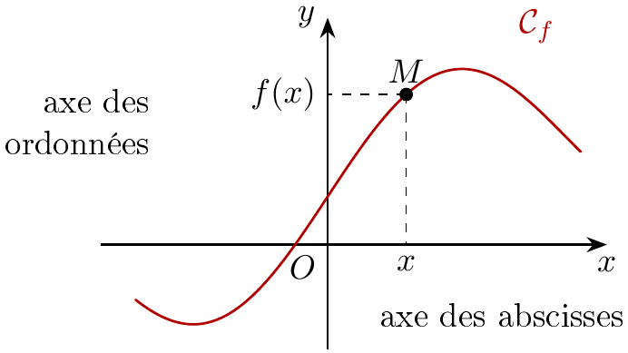
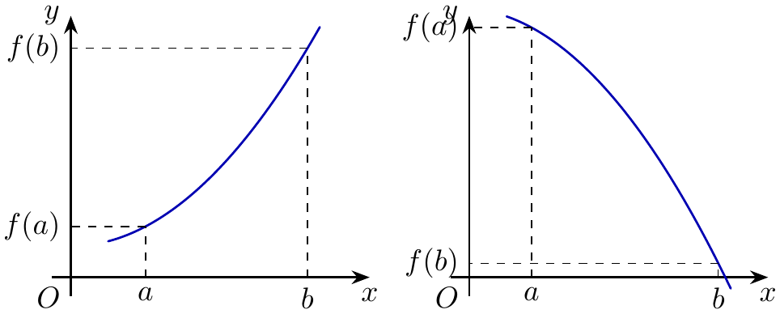
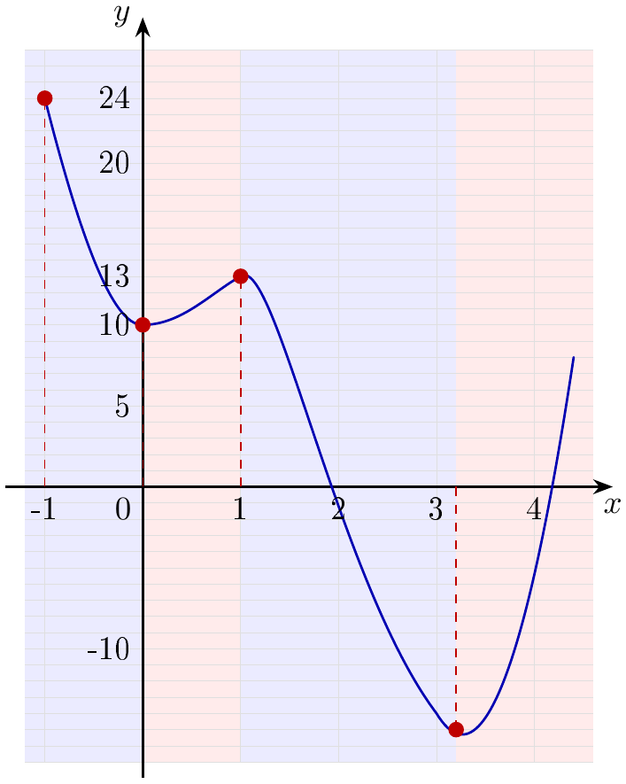
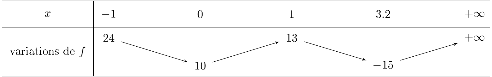
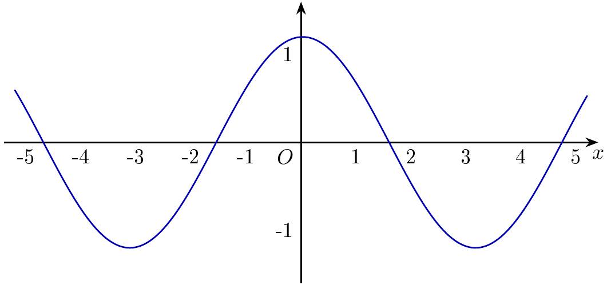
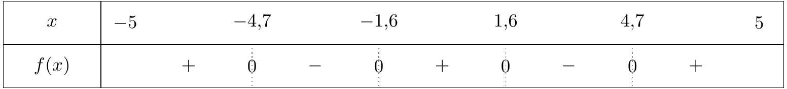
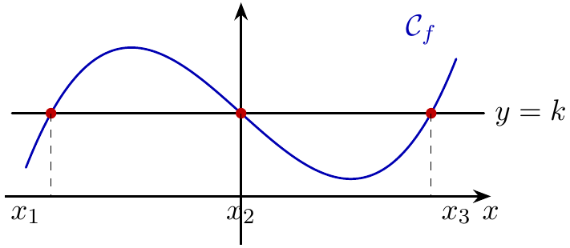
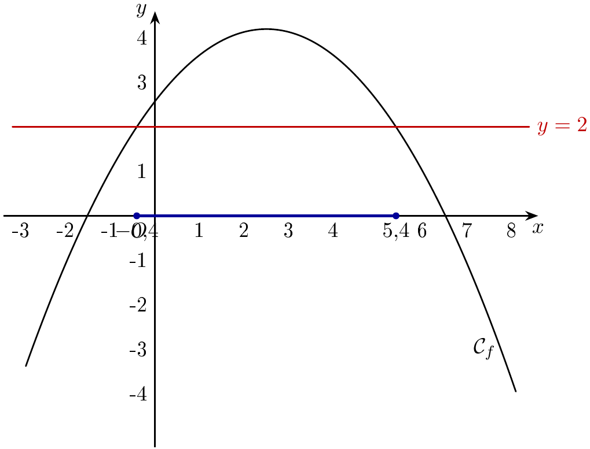
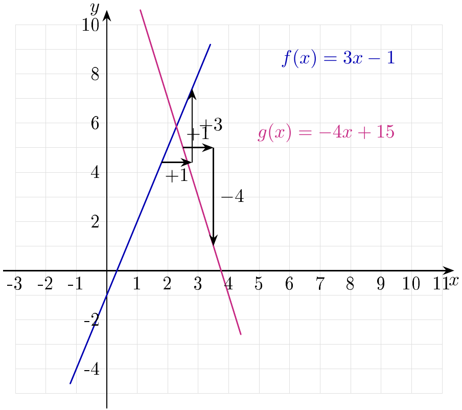

Chapitre 3 : Généralités sur les fonctions
Première STMG · Chapitre 3 - Généralités sur les fonctions · cours de Frederik de Peyrelongue
I. Généralités sur les fonctions
I.1 Définition
Une fonction réelle est définie sur un ensemble de définition et est à valeurs dans $\R$ : c'est une application du domaine de définition dans $\R$.
Chaque antécédent du domaine de définition admet une unique image.
On note $D_{f}$ le domaine de définition.
I.2 Représentation graphique
Une fonction réelle peut être représentée graphiquement dans un repère orthonormé par l'ensemble des points de coordonnées $(x\,;f(x))$, avec $x$ parcourant l'ensemble $D_{f}$.

Pour construire la courbe $\mathcal{C}$ d'une fonction :
- on dresse un tableau de valeurs ;
- on place les points du tableau dans le repère orthogonal $(O,I,J)$ ;
- on relie les points à main levée.
| $x$ | $-5$ | $-4$ | $-3$ | etc | |||
| $f(x)$ |
I.3 Sens de variation
Une fonction $f$ est croissante sur un intervalle $I$ si elle conserve l'ordre : pour toutes valeurs réelles $a$ et $b$ de $I$ telles que $a<b$, on a $f(a)<f(b)$.
Une fonction $f$ est décroissante sur un intervalle $I$ si elle inverse l'ordre : pour toutes valeurs réelles $a$ et $b$ de $I$ telles que $a<b$, on a $f(a)>f(b)$.

Graphiquement : une fonction strictement croissante monte constamment, et une fonction strictement décroissante descend constamment.
Soit la fonction $f$ représentée sur l'intervalle $[-1\,;+\infty[$.

$f$ est décroissante sur $[-1\,;0]$, croissante sur $[0\,;1]$, décroissante sur $[1\,;3.2]$, puis enfin croissante sur $[3.2\,;+\infty[$.
On résume les variations de la fonction $f$ dans un tableau de variation :

I.4 Signe d'une fonction
S'intéresser au signe d'une fonction, c'est identifier les solutions de l'inéquation $f(x)>0$.
La fonction est positive pour toutes les abscisses de la courbe $\mathcal{C}$ strictement au-dessus de l'axe des abscisses, et elle est négative pour toutes les abscisses en dessous de l'axe des abscisses.
Tableau de signe : il indique, selon les intervalles, le signe de la fonction.


I.5 Résolution graphique
Résolution de $f(x)=k$.
Pour résoudre l'équation $f(x)=k$ graphiquement, on trace la droite horizontale $D : y=k$ ; les abscisses des points d'intersection de la courbe $\mathcal{C}$ avec la droite $D$ sont les solutions de l'équation $f(x)=k$.
S'il n'y a pas de point d'intersection entre $D$ et $\mathcal{C}$, il n'y a pas de solution !

Résolution de $f(x)>k$.
Pour résoudre l'inéquation $f(x)>k$ graphiquement, on trace la droite horizontale $D : y=k$ ; les abscisses des points de la courbe $\mathcal{C}$ au-dessus strictement de la droite $D$ sont les solutions de l'inéquation $f(x)>k$.

II. Les fonctions affines
Une fonction affine est définie sur $\R$ par
avec $a$ et $b$ deux paramètres réels.
La courbe $\mathcal{C}$ de la fonction affine est une droite, qui passe par le point de coordonnées $(0\,;b)$ et ayant une pente, ou un coefficient directeur, de valeur $a$.
On appelle « $b$ » l'ordonnée à l'origine et « $a$ » le coefficient directeur.
Soit $f$ une fonction affine définie par $f(x)=ax+b$ :
- si $a>0$, alors la fonction affine est strictement croissante ;
- si $a<0$, alors la fonction affine est strictement décroissante ;
- si $a=0$, alors la fonction affine est constante.

II.1 Tracer la droite représentant une fonction affine
- pour tracer la courbe d'une fonction affine (une droite), il suffit de déterminer deux points de la droite : on choisit deux abscisses et on calcule les deux images par $f$ ;
- on peut aussi placer l'ordonnée à l'origine, le point $(0\,;b)$, et utiliser le coefficient directeur pour tracer la droite.
Toute droite du plan, dans un repère orthonormé, non parallèle à l'axe des ordonnées, est la représentation d'une fonction affine.
Pour déterminer cette fonction affine, on peut :
- déterminer la pente de la droite et lire l'ordonnée à l'origine : on a ainsi déterminé les coefficients $a$ et $b$ ;
- « $b$ » s'obtient par lecture graphique : c'est l'ordonnée du point d'abscisse $0$ ;
« $a$ » s'obtient en calculant, pour deux points $A$ et $B$ de la droite, le rapport
\[ \frac{y_{B}-y_{A}}{x_{B}-x_{A}} . \]